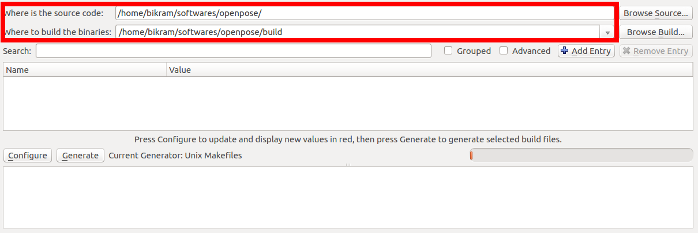
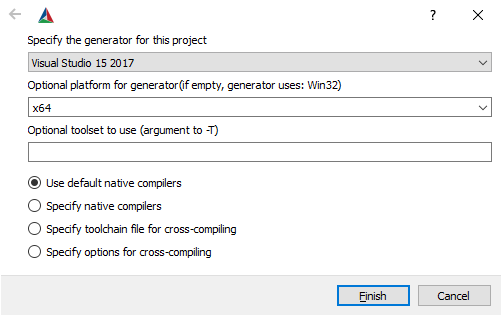
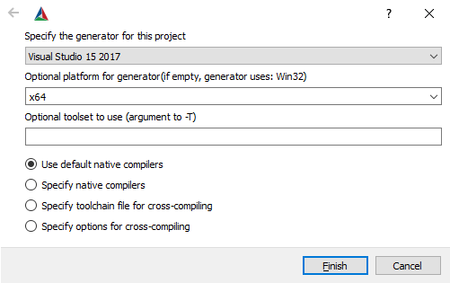

|
OpenPose
1.7.0
The first real-time multi-person system to jointly detect human body, hand, facial, and foot keypoints
|
|
OpenPose
1.7.0
The first real-time multi-person system to jointly detect human body, hand, facial, and foot keypoints
|
nvidia-smi command checks the available GPU memory in Ubuntu).--net_resolution and/or scale_number or less resources by reducing the net resolution and/or using the MPI and MPI_4 models.If you just want to use OpenPose without compiling or writing any code, simply use the latest portable version of OpenPose for Windows.
Instructions.txt file inside the downloaded zip file to download the models required by OpenPose (about 500 Mb).Note: If you are using the GPU-accelerated version and are seeing Cuda check failed (3 vs. 0): initialization error when running OpenPose, you can fix it by doing one of these:
The instructions in the following subsections describe the steps to build OpenPose using CMake-GUI. These instructions are only recommended if you plan to modify the OpenPose code or integrate it with another library or project. You can stop reading this document if you just wanted to run OpenPose on Windows without compiling or modifying any code.
Any problem installing OpenPose while following this guidelines? Check doc/05_faq.md and/or check existing GitHub issues. If you do you find your issue, post a new one. We will not respond to duplicated issues, as well as GitHub issues about Caffe, OpenCV or CUDA installation errors, as well as issues that do not fill all the information that the GitHub template asks for.
Make sure to download and install the prerequisites for your particular operating system.
The first step is to clone the OpenPose repository.
build) where the Makefile files (Ubuntu) or Visual Studio solution (Windows) will be generated. If build does not exist, it will ask you whether to create it. Press Yes.  
Configure button, keep the generator in Unix Makefiles (Ubuntu) or set it to your 64-bit Visual Studio version (Windows), and press Finish. Note for Windows users: CMake-GUI has changed their design after version 14. For versions older than 14, you usually select Visual Studio XX 20XX Win64 as the generator (X depends on your VS version), while the Optional toolset to use must be empty. However, new CMake versions require you to select only the VS version as the generator, e.g., Visual Studio 16 2019, and then you must manually choose x64 for the Optional platform for generator. See the following images as example.  

BUILD_PYTHON flag and click Configure again.GPU_MODE flag to the proper value and click Configure again:GPU_MODE back to CPU_ONLY.GPU_MODE to CPU_ONLY.GPU_MODE flag to CPU_ONLY (easier to install but slower runtime) or OPENCL (GPU-accelerated, it is harder to install but provides a faster runtime speed). For more details on OpenCV support, see doc/1_prerequisites.md and OpenCL Version.GPU_MODE flag to CPU_ONLY.Configuring done text will appear in the bottom box in the last line. Otherwise, some red text will appear in that same bottom box. 

Generate button and proceed to Compilation. You can now close CMake.Note: If you prefer to use your own custom Caffe or OpenCV versions, see Custom Caffe or Custom OpenCV respectively.
Run the following commands in your terminal.
Run the following commands in your terminal:
Advanced tip: Mac provides both logicalcpu and physicalcpu, but we want the logical number for maximum speed.
If the default compilation fails with Caffe errors, install Caffe separately and set BUILD_CAFFE to false in the CMake config. Steps:
rm -rf build; mkdir build; cd build.brew uninstall caffe to remove the version of Caffe previously installed via cmake.brew install caffe to install Caffe separately.cmake-gui and make the following adjustments to the cmake config:BUILD_CAFFE set to false.Caffe_INCLUDE_DIRS set to /usr/local/include/caffe.Caffe_LIBS set to /usr/local/lib/libcaffe.dylib.Configure and Generate from CMake GUI.If you face an OpenCV error during compiling time similar to ‘fatal error: 'opencv2/highgui/highgui.hpp’ file not found`, please apply the following patch (this error has been reported in the latest OSX 10.14):
In order to build the project, select and run only one of the 2 following alternatives.
Open Project in CMake (or alternatively build/OpenPose.sln). Then, set the configuration from Debug to Release.F7 (or Build menu and click on Build Solution).F5 (Run), you must also Build Solution for the Python bindings to be generated.F5) to run the OpenPose demo with the default settings on the webcam.VERY IMPORTANT NOTE: In order to use OpenPose outside Visual Studio, and assuming you have not unchecked the BUILD_BIN_FOLDER flag in CMake, copy all DLLs from {build_directory}/bin into the folder where the generated openpose.dll and *.exe demos are, e.g., {build_directory}x64/Release for the 64-bit release version.
If you are facing errors with these instructions, these are a set of alternative instructions created by the community:
We welcome users to send us their installation videos (e.g., sharing them as GitHub issue or doing a pull request) and we will post them here.
Check OpenPose was properly installed by running any demo example: doc/01_demo.md.
You can quickly add your custom code so that quick prototypes can be easily tested without having to create a whole new project just for it. See examples/user_code/README.md for more details.
If you do not want to use the Windows portable binaries nor compile it from source code, we add links to some community-based work based on OpenPose. Note: We do not support them, and we will remove new GitHub issues opened asking about them as well as block those users from posting again. If you face any issue, comment only in the GitHub issues links especified below, or ask the owner of them.
sudo apt-get install docker-ce. The other steps can be found here.docker pull exsidius/openpose - Guide.OpenPose can be easily uninstalled:
sudo make install (which we do not recommend), then run sudo make uninstall in build/.In order to update it or reinstall it:
See doc/advanced/deployment.md.
Check the OpenPose Benchmark as well as some hints to speed up and/or reduce the memory requirements to run OpenPose on doc/06_maximizing_openpose_speed.md.
NOTE: The accuracy of the CPU/OpenCL versions is a bit lower than CUDA version, so the results will very slightly vary. In practice, the different is barely noticeable, so you are safe using these.
This step is only supported for Intel CPUs on Ubuntu versions 16 and 14. It does not compile on Ubuntu 20, and we have not tested it on Ubuntu 18.
After setting the GPU_MODE flag to CPU_ONLY and clicking Configured, search for USE_MKL and set it to true. Then, click Configure again. This way, OpenPose will link against the Intel MKL version (Math Kernel Library) of Caffe. This speeds up CPU version on Ubuntu roughly about 2-3x, making it as fast as the Windows CPU-only version.
The default CPU version takes about 0.2 images per second on Ubuntu (~50x slower than GPU) while the MKL version provides a roughly 2x speedup at ~0.4 images per second. As of now OpenPose does not support MKL on Windows but will at a later date. Also, MKL version does not support unfixed resolution. So a folder of images of different resolutions requires a fixed net resolution (e.g., --net_resolution 656x368).
For MKL, the user can configure the environmental variables MKL_NUM_THREADS and OMP_NUM_THREADS. They are set at an optimum parameter level by default (i.e., to the number of threads of the machine). However, they can be tweak by running the following commands into the terminal window, right before running any OpenPose application. Eg:
Increasing the number of threads results in a higher RAM memory usage. You can check the doc/06_maximizing_openpose_speed.md for more information about speed and memory requirements in several CPUs and GPUs.
NOTE: The accuracy of the CPU/OpenCL versions is a bit lower than CUDA version, so the results will very slightly vary. In practice, the different is not barely noticeable, so you are safe using these.
If you have an AMD graphics card, you can compile OpenPose with the OpenCL option. To manually select the OpenCL Version, open CMake GUI mentioned above, and set the GPU_MODE flag to OPENCL (or non-UI CMake with GPU_MODE=OPENCL). Very important: If you compiled previously the CPU-only or CUDA versions on that same OpenPose folder, you will have to manually delete the build directory and run the installation steps from scratch. Otherwise, many weird errors will appear.
The OpenCL version has been tested on Ubuntu, Windows and OSX. This has been tested only on AMD Vega series and NVIDIA 10 series graphics cards. Please email us if you have issues with other operating systems or graphics cards. Running on OSX on a Mac with an AMD graphics card requires special instructions which can be seen in the section below.
Lastly, OpenCL version does not support unfixed --net_resolution. So a folder of images of different resolutions with OpenPose, requires the --net_resolution 656x368 flag for example. This should be fixed by the Caffe author in a future patch.
By default, the body COCO and MPI models are not downloaded (they are slower and less accurate than BODY_25, so not useful in most cases!). But you can download them by turning on the DOWNLOAD_BODY_COCO_MODEL or DOWNLOAD_BODY_MPI_MODEL flags. Check the differences between these models in doc/05_faq.md#difference-between-body_25-vs-coco-vs-mpi.
You can include the 3D reconstruction module by:
{PointGreyParentDirectory}\Point Grey Research\Spinnaker\bin64\vs2015\ as {OpenPoseDirectory}\3rdparty\windows\spinnaker\bin\. You can remove all the *.exe files.{PointGreyParentDirectory}\Point Grey Research\Spinnaker\include\ as {OpenPoseDirectory}\3rdparty\windows\spinnaker\include\.Spinnaker_v140.lib and Spinnakerd_v140.lib from {PointGreyParentDirectory}\Point Grey Research\Spinnaker\lib64\vs2015\ into {OpenPoseDirectory}\3rdparty\windows\spinnaker\lib\.sudo apt-get update && sudo apt-get install build-essential freeglut3 freeglut3-dev libxmu-dev libxi-dev and reboot your PC.3rdparty\windows\getFreeglut.bat.{OpenPoseDirectory}\3rdparty\windows\freeglut\.MSVC Package from http://www.transmissionzero.co.uk/software/freeglut-devel/.{freeglutParentDirectory}\freeglut\bin\x64\ as {OpenPoseDirectory}\3rdparty\windows\freeglut\bin\.{freeglutParentDirectory}\freeglut\include\ as {OpenPoseDirectory}\3rdparty\windows\freeglut\include\.{freeglutParentDirectory}\freeglut\lib\x64\ as {OpenPoseDirectory}\3rdparty\windows\freeglut\lib\.WITH_FLIR_CAMERA (only if Spinnaker was installed) and WITH_3D_RENDERER options.sudo apt-get install libeigen3-dev, install Ceres solver, and enable WITH_CERES in CMake when installing OpenPose. Ceres is harder to install in Windows, so we have not tested it so far in there. Feel free to make a pull request if you do.After installation, check the doc/advanced/3d_reconstruction_module.md instructions.
The instrinsic camera calibration toolbox is included by default.
To enable the extrinsic camera parameter estimation toolbox, you must also enable WITH_EIGEN in CMake during CMake Configuration. You can perform any of the 3 following options (but only 1 of them!)
WITH_EIGEN flag to AUTOBUILD. CMake will automatically download Eigen and configure OpenPose to use it. If you prefer to download it manually (or if your firewall blocks CMake from downloading it):3rdparty/eigen/.WITH_EIGEN to FIND, you must have Eigen already installed in your system. Note that Eigen <= 3.3.6 is not supported by CUDA >=9.1. In order to install it (make sure that Eigen version is compatible with CUDA!):sudo apt-get install libeigen3-dev and link CMake to the right CMake.WITH_EIGEN to AUTOBUILD, click Configure to let CMake download the zip file, and replace 3rdparty/eigen/ by your own version.After installation, check the doc/advanced/calibration_module.md instructions.
Check Unity Plugin.
However, the OpenPose Unity version will crash if if faces an error while it is not used inside Unity. Thus, do not use it without Unity. Although this version would work as long as no errors occur.
The cuDNN library is not mandatory, but required for full keypoint detection accuracy. In case your graphics card is not compatible with cuDNN, you can disable it by unchecking USE_CUDNN in CMake.
Then, you would have to reduce the --net_resolution flag to fit the model into the GPU memory. You can try values like 640x320, 320x240, 320x160, or 160x80 to see your GPU memory capabilities. After finding the maximum approximate resolution that your GPU can handle without throwing an out-of-memory error, adjust the net_resolution ratio to your image or video to be processed (see the --net_resolution explanation from doc/advanced/demo_advanced.md), or use -1 (e.g., --net_resolution -1x320).
OpenPose uses a custom fork of Caffe (rather than the official Caffe master). Our custom fork is only updated if it works on our machines, but we try to keep it updated with the latest Caffe version. This version works on a newly formatted machine (Ubuntu 16.04 LTS) and in all our machines (CUDA 8 and 10 tested). The default GPU version is the master branch, which it is also compatible with CUDA 10 without changes (official Caffe version might require some changes for it). We also use the OpenCL and CPU tags if their CMake flags are selected. We only modified some Caffe compilation flags and minor details.
Alternatively, you can use your own Caffe distribution on Ubuntu/Mac by 1) disabling BUILD_CAFFE, 2) setting Caffe_INCLUDE_DIRS to {CAFFE_PATH}/include/caffe, and 3) setting Caffe_LIBS to {CAFFE_PATH}/build/lib/libcaffe.so, as shown in the image below. Note that cuDNN-compatible Caffe version is required in order to get the maximum possible accuracy in OpenPose.

For Windows, simply replace the OpenCV DLLs and include folder for your custom one.
This functionality was added by the community, and we do not officially support it. New pull requests with additional functionality or fixing any bug are welcome!
It has been tested with the official Nvidia Docker image nvcr.io/nvidia/caffe:18.12-py2.
For questions and issues, please only post on the related Pull Request #1169. New GitHub issues about this topic (i.e., outside PR #1169) will be automatically closed with no answer.
Windows support has not been added. Replace set_property(CACHE DL_FRAMEWORK PROPERTY STRINGS CAFFE) by set_property(CACHE DL_FRAMEWORK PROPERTY STRINGS CAFFE NV_CAFFE) in CMakeLists.txt if you intend to use it for Windows, and feel free to do a pull request of it working!
To use a NVIDIA's NVCaffe docker image instead of the standard Caffe, set the following CMake flags:
DL_FRAMEWORK variable to NV_CAFFE.BUILD_CAFFE variable to OFF.Caffe_INCLUDE_DIRS and Caffe_LIBS paths following Custom Caffe.In addition, peter-uhrig.de/openpose-with-nvcaffe-in-a-singularity-container-with-support-for-multiple-architectures/ contains a detailed step-by-step guide to install a portable container with NVCaffe and support for multiple NVidia cards as well as CPU.
If you have built OpenCV from source and OpenPose cannot find it automatically, you can set the OPENCV_DIR variable to the directory where you build OpenCV (Ubuntu and Mac). For Windows, simply replace the OpenCV DLLs and include folder for your custom one.
You can generate the documentation by setting the BUILD_DOCS flag. The documentation will be generated in doc/doxygen/html/index.html. You can simply open it with double-click (your default browser should automatically display it).
Note that this step is unnecessary if you already used the CMake GUI alternative.
Create a build folder in the root OpenPose folder, where you will build the library –
The next step is to generate the Makefiles. Now there can be multiple scenarios based on what the user already has e.x. Caffe might be already installed and the user might be interested in building OpenPose against that version of Caffe instead of requiring OpenPose to build Caffe from scratch.
In the build directory, run the below command –
In this example, we assume that Caffe and OpenCV are already present. The user needs to supply the paths of the libraries and the include directories to CMake. For OpenCV, specify the include directories and the libraries directory using OpenCV_INCLUDE_DIRS and OpenCV_LIBS_DIR variables respectively. Alternatively, the user can also specify the path to the OpenCVConfig.cmake file by setting the OpenCV_CONFIG_FILE variable. For Caffe, specify the include directory and library using the Caffe_INCLUDE_DIRS and Caffe_LIBS variables. This will be where you installed Caffe. Below is an example of the same.
If Caffe is not already present but OpenCV is, then use the below command.
You can check the CMake online documentation to check all the options that CMake provides and its analogs to the CMake-gui ones that we show on this document.